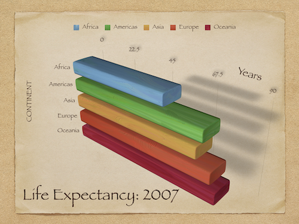
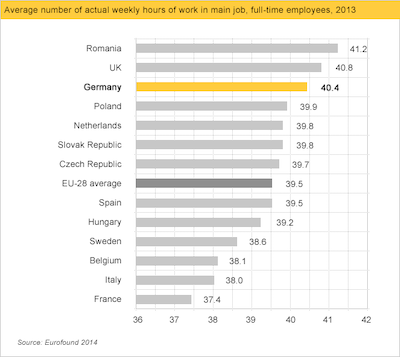
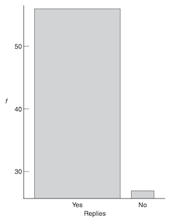

Data visualization, pt. 3 (principles)#
Goals of this lecture#
We’ve already covered the basics of creating data visualizations using pyplot and seaborn.
In this lecture, we’ll discuss some principles of data visualization.
Taxonomy of plot types: what plot to use, when?
Just a rough guide––context always matters.
Principles, and what to avoid.
Additional considerations.
Import relevant libraries#
import seaborn as sns ### importing seaborn
import pandas as pd
import matplotlib.pyplot as plt ## just in case we need it
%matplotlib inline
%config InlineBackend.figure_format = 'retina'
Taxonomy of plot types#
Rough guide: what plot to use, when?#
How many variables? |
What kind of variable(s)? |
Plot types |
|
|---|---|---|---|
1 |
Continuous |
Histogram |
|
1 |
Categorical |
Count plot |
|
2 |
Cont. |
Scatter, line |
|
2 |
Cat. |
Bar, box, strip |
|
What about \(>2\) variables?#
It depends on the type of variables.
Rough guide:
2 continuous, 1 categorical:
seaborn.relplotwithhue2 categorical, 1 continuous:
seaborn.catplotwithhue3 continuous:
seaborn.relplotwithsizeorhue
Principles, and what to avoid#
In this section, we’ll propose and discuss possible principles behind building better visualizations.
Many of these principles are context-dependent, and not without disagreement.
This section is closely modeled on Chapter 1 of Kieran Healy’s Data Visualization.
What makes for a good visualization?#
In The visual display of quantitative information, Edward Tufte argues:
Graphical excellence is the well-designed presentation of interesting data—a matter of substance, of statistics, and of design … [It] consists of complex ideas communicated with clarity, precision, and efficiency. … [It] is that which gives to the viewer the greatest number of ideas in the shortest time with the least ink in the smallest space … [It] is nearly always multivariate … And graphical excellence requires telling the truth about the data. (Tufte, 1983, p. 51).
This is true, but also very general––can we be more specific?
Different kinds of bad?#
The sociologist Kieran Healy points out that graphs can be “bad” in different ways.
Aesthetic: graph design is aesthetically unappealing.
Substantive: either the data or its presentation (or both) have fundamental problems.
Perceptual: the graph is misleading because of how people perceive and process what they’re looking at.
Bad taste#
Many graphs have aesthetic features that are overly complex given what they’re trying to convey.
3D bar plots despite no need for three dimensions.
Other aesthetic features like drop shadow.
These features can needlesly “complexify” a graph, making it harder to interpret.
An overly complex graph#

Principle 1: Maximize data-to-ink ratio#
One suggestion is to maximize the data-to-ink ratio.
Don’t add aesthetic features unless they convey information.
However…there’s evidence that some aesthetically complex figures are easier to remember. So it depends!
Bad data#
No amount of elegant aesthetics can make up for bad data!
Healy uses the example of a graph from the New York Times. This graph is misleading:
About the
x-axis: implies same people at different time, when it’s actually people of different ages at the same time.About the
y-axis: implies yes/no question, when it’s subsetting responses to a 10-point scale.
Principle 2: Be true to the data#
Your visualization should represent what the data measures.
(This one’s not really context-dependent! Always be true to the data.)
Bad perception#
Finally, graphs can be misleading because their aesthetics imply something incorrect about the data.
Visualizations encode numbers in lines, shapes, and colors. That means that our interpretation of these encodings is partly conditional on how we perceive geometric shapes and relationships generally. (Healy, Data Visualization).
Bar plots and the principle of proportional ink#
A key aesthetic feature of bar plots is the amount of ink devoted to a bar.
As viewers, our eyes measure the relative difference in how much space is devoted to each bar.
Larger perceptual differences imply larger magnitude differences.
This principle can be violated in several ways.
Truncated y-axis exaggerates differences#

Bars should be of equal width#

When not to start at zero?#
Bar plots should start at zero.
But in many cases, starting at zero can actually be misleading.
With line plots, the goal is to show the relative difference in position.
With very large
y-axis values, starting at zero can be confusing.
When relative change is what matters (pt. 1)#
This graph shows changes in temperature (Celsius) over Year, and starts at 0.
df_temp = pd.read_csv("data/viz/temp.csv")
sns.lineplot(data = df_temp, x = 'Year', y = 'Temp_original')
plt.ylim(0)
(0.0, 14.905095)
When relative change is what matters (pt. 2)#
This graph shows changes in temperature (Celsius) over Year, but doesn’t start at 0.
sns.lineplot(data = df_temp, x = 'Year', y = 'Temp_original')
<Axes: xlabel='Year', ylabel='Temp_original'>
Summing up: principles and practice#
We’ve discussed several principles (and corresponding practices to avoid):
Principle 1: Maximize data-ink ratio.
Principle 2: Be true to the data.
Principle 3: Be true to what the visual logic of your graph implies.
Additional considerations#
Data visualization could make up an entire course (or textbook).
But there are several other common issues to discuss:
Should I show the mean (or median, etc.) or the raw data?
Should I exclude outliers?
Should I transform my data (e.g., to a log-scale)?
Should I show the “raw data”?#
All measures of central tendency (e.g., mean, median) are a simplification of our data.
Thus, showing only the mean “hides” much of your data.
However, if the
meanis what you care about, then the raw data can be overly complex.
Personally, I try to show the raw data where possible––along with the mean.
Showing both the summary and raw data#
df_pokemon = pd.read_csv("data/pokemon.csv")
sns.stripplot(data = df_pokemon, x = "Legendary", y = "Attack", alpha = .2)
sns.pointplot(data = df_pokemon, x = "Legendary", y = "Attack")
<Axes: xlabel='Legendary', ylabel='Attack'>
Should I exclude outliers?#
Outliers are data points that differ significantly from other points in a distribution.
Including outliers in a visualization can be confusing.
They lengthen the axis despite being unrepresentative of the data.
They can distract from the main point you want to convey.
Should you remove them?
Be transparent about exclusion#
This one is very context-dependent.
Personally, I usually don’t exclude outliers.
But if you do exclude them, be very clear about your decision.
Ideally, this decision would be “pre-registered” ahead of time.
Next week, we’ll discuss how to define/detect outliers using z-scores.
Should I transform my data?#
Sometimes, the “raw” data is heavily skewed.
A log transform can turn right-skewed data look more “normal”.
When is this a good or bad idea?
Right-skewed data can be confusing#
df_gapminder = pd.read_csv("data/viz/gapminder_full.csv")
sns.histplot(data = df_gapminder, x = 'population')
<Axes: xlabel='population', ylabel='Count'>
Log-transforms make it look more normal#
sns.histplot(data = df_gapminder, x = 'population', log_scale=True)
<Axes: xlabel='population', ylabel='Count'>
But what’s “correct”?#
Considerations to keep in mind:
Is there reason to think that this variable scales logarithmically?
Is there reason to think that this variable’s relationship with other variables scales logarithmically?
Will I be presenting this figure to an audience who understands logarithmic scaling?
In terms of interpretation:
A logarithmic scale implies multiplicative/relative changes.
A linear scale implies additive/absolute changes.
Conclusion#
Data visualization is central to Computational Social Science. This week has focused on the how (seaborn and pyplot) as well as principles to keep in mind.
For further reference, see: